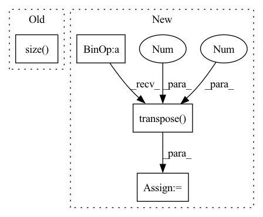

Pattern ID :1625
Before Change
k = k if torch.is_tensor(k) else q
q = self.proj_q(q).view(-1, q.size(1), self._head_dims)
k = self.proj_k(k).view(-1, k.size( 1) , self._head_dims)
v = self.proj_v(v).view(-1, v.size(1), self._head_dims)
att = torch.bmm(q, k.transpose(1, 2)) / self._h_dims**0.5After Change
k = k.transpose(0, 1).contiguous()
v = v.transpose(0, 1).contiguous()
b = q.size(1) * self._heads
q = self.q(q).view(-1, b, self._head_dims).transpose(0, 1)
k = self.k(k).view(-1, b, self._head_dims).transpose(0, 1)
v = self.v(v).view(-1, b, self._head_dims).transpose(0 , 1 )
att = torch.bmm(q, k.transpose(1, 2)) / self._h_dims**0.5
if mask is not None:
mask = torch.where(mask > 0, .0, float("-inf"))
mask = mask.repeat_interleave(self._heads, dim=0)
att += mask.unsqueeze(1).expand(-1, att.size(1), -1)
att = att.softmax(-1)
if self.dropout is not None:
att = self.dropout(att)
m = torch.bmm(att, v).transpose(0, 1).contiguous()
m = self.m(m).view(m.size(0), -1, self._h_dims).transpose(0, 1)
return m
In pattern: SUPERPATTERN
Frequency: 3
Non-data size: 4
Instances Fragment ID: 6577636
Project Name: yeliudev/nncore
Commit Name: e58a22da4dce9778c38aae284b0c80d84937b04c
Time: 2021-11-05
Author: yeliudev@outlook.com
File Name: nncore/nn/blocks/transformer.py
M Class Name: MultiHeadAttention
N Class Name: MultiHeadAttention
M Method Name: forward(5)
N Method Name: forward(5)
M Parent Class: nn.Module
N Parent Class: nn.Module
M File Name: nncore/nn/blocks/transformer.py
N File Name: nncore/nn/blocks/transformer.py
M Start Line: 79
M End Line: 98
N Start Line: 79
N End Line: 105
Before Change
self.temperature = temperature
def forward(self, g_t: torch.Tensor) -> torch.Tensor:
train_bs, class_num = g_t.size( 0) , g_t.size(1)
g_t_temp = g_t / self.temperature
g_t_temp_softmax = nn.Softmax(dim=1)(g_t_temp)
target_entropy_weight = entropy(g_t_temp_softmax).detach()After Change
entropy_weight = entropy(predictions).detach()
entropy_weight = 1 + torch.exp(-entropy_weight)
entropy_weight = (batch_size * entropy_weight / torch.sum(entropy_weight)).unsqueeze(dim=1) // batch_size x 1
class_confusion_matrix = torch.mm((predictions * entropy_weight).transpose(1 , 0 ) , predictions)
class_confusion_matrix = class_confusion_matrix / torch.sum(class_confusion_matrix, dim=1)
mcc_loss = (torch.sum(class_confusion_matrix) - torch.trace(class_confusion_matrix)) / num_classes
return mcc_loss Fragment ID: 6577637
Project Name: thuml/transfer-learning-library
Commit Name: 7f63cd30ea0e7cf8961db90d2af8630e2429b434
Time: 2020-08-28
Author: 13126830206@163.com
File Name: dalib/adaptation/mcc.py
M Class Name: MinimumClassConfusionLoss
N Class Name: MinimumClassConfusionLoss
M Method Name: forward(2)
N Method Name: forward(2)
M Parent Class: nn.Module
N Parent Class: nn.Module
M File Name: dalib/adaptation/mcc.py
N File Name: dalib/adaptation/mcc.py
M Start Line: 17
M End Line: 23
N Start Line: 41
N End Line: 46
Before Change
enc_output = self.encode(inputs, i_mask)
t_mask = utils.create_pad_mask(targets, self.trg_pad_idx)
target_size = targets.size() [1]
t_self_mask = utils.create_trg_self_mask(target_size,
device=targets.device)
return self.decode(targets, enc_output, i_mask, t_self_mask, t_mask)After Change
// Reshaping features
sizes = padded_input.size() // B x H_1 (channel?) x H_2 x T
padded_input = padded_input.view(sizes[0], sizes[1] * sizes[2], sizes[3])
padded_input = padded_input.transpose(1 , 2 ) .contiguous() // BxTxH
encoder_padded_outputs, _ = self.encoder(padded_input, input_lengths)
pred, gold, *_ = self.decoder(padded_target, encoder_padded_outputs, input_lengths) Fragment ID: 6577655
Project Name: qute012/kosr
Commit Name: b7d24b0d835254fd425224eba3421a3b7224e55f
Time: 2021-01-12
Author: ejrwls012@gmail.com
File Name: model/transformer/transformer.py
M Class Name: Transformer
N Class Name: Transformer
M Method Name: forward(4)
N Method Name: forward(3)
M Parent Class: nn.Module
N Parent Class: nn.Module
M File Name: model/transformer/transformer.py
N File Name: model/transformer/transformer.py
M Start Line: 19
M End Line: 28
N Start Line: 18
N End Line: 34